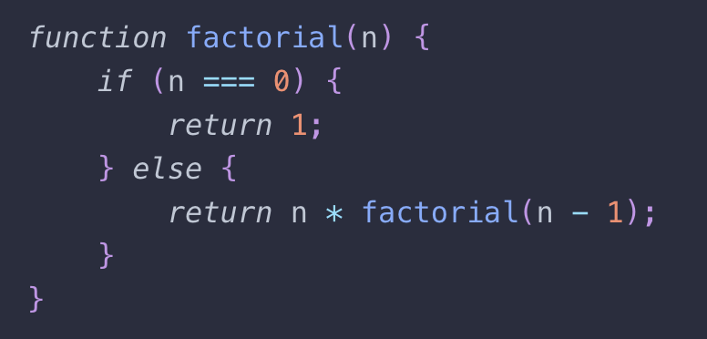
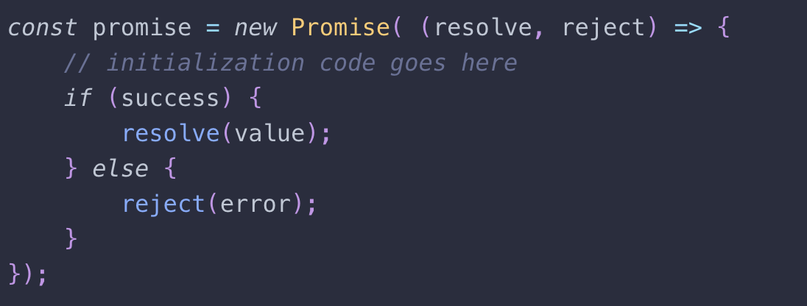
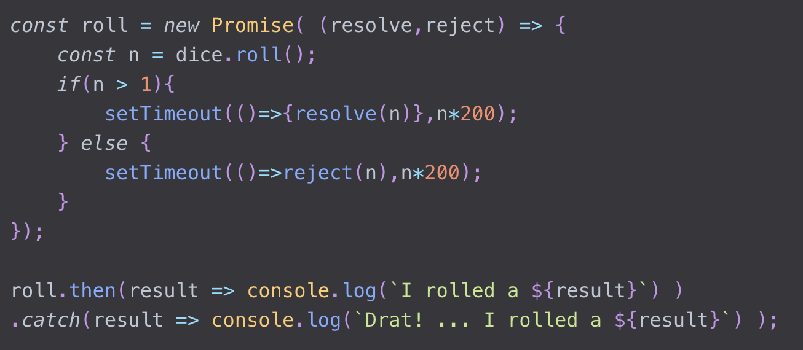

LocalStorage
LocalStorage is used to cache data in the users browser.
- localStorage.getItem(key) -> returns value
- localStorage.setItem(key, value) -> sets value
Recursive Functions
A recursive function is a function that calls itself in the function logic. Typically it is good to make a recursive call conditional or it will result in an infinite loop.
Promises
A Promise is a way to make asynchronous code synchronous. It is similar to asnyc/await but in my options it is more structured.
Each promise has a "reject" and "resolve" method provided. Typically, a promise deals mainly with "resolve". Resolves is relfects the response product that is being waited for. after a promise the callback function "then()" is used to access the response from the resolve.

AJAX
Ajax allows a developer to make asyncronouse server requests from the client. The requests return a callback that can be unpacked using promise or asnyc/await.
One of the most common AJAX related use cases is the fetch API. Using fetch is similart to a promise because a fetch request returns a promise that can be unpacked in the same way. Fetch typically accepts a url for get requests and in the case of POST or other specialized requests, fetch accepts a url and a javaScript Object with specified info for the request such as the request method, body, or other headers.